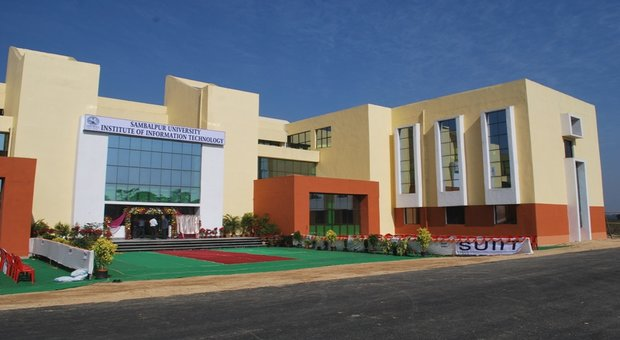

about Us ?
SUIIT is functioning successfully since 2010 as an autonomous constituent institute of Sambalpur University in the line of IIITs to impart training and to have quality research programme relating to Information Technology and allied subjects. The training in the institute has been envisioned to be holistic academic programme which includes training in humanities, management sciences and basic sciences besides the relevant technical subjects.
Sambalpur University is one of the oldest Universities of the State of Odisha and catering to the higher educational need of over 10 districts and a part of Angul district of the state since 1966. With time, the University has established itself as a leading educational institute with global footprints and has been centre of attraction for students and scholars from other states as well.
Sambalpur University has been at the forefront of nurturing technical educations in the state of Odisha through R.E.C. Rourkela (presently NIT, RKL) and U.C.E, Burla (presently VSSUT, Burla) and its alumni have earned name and fame not only in India but also in abroad.
SUIIT is an unique venture to make use of the decades of rich academic experience and achievements of the University in diverse fields for nurturing the young minds in the contemporary globalized environment where the demand is for innovation, research and technical skill of international standard.
SUIIT's Mission ?
To inspire young minds to lead the world in the right direction by quality research in Information Technology and allied areas and to create a technically sound workforce that puts the nation in safer hands for a bright future.
SUIIT's Vision ?
To enlighten the young minds by giving patronage to the unsatisfied thirst for knowledge, to contribute to mankind through excellence in scientific and technological education and research, to prove to be a valuable resource for industry and society alike and to remain a symbol of pride for all Indians.
Our Recognition ?
Sambalpur University Institute of Information Technology (SUIIT) has been awarded as “Best Emerging Technical Institute” of Odisha on the eve of Engineer’s Day on 15th Sept., 2013 by Ever Green Forum, a leading social organization of Odisha at Jayadev Bhavan, Bhubaneswar. Prof. Shashank Sekhar Pujari, Director, SUIIT received the award at the function which was attended by leading Educationists & scientists of Odisha.
General Infrastructure ?
SUIIT has an exclusive campus adjacent to the main campus of the Sambalpur University at Jyoti Vihar, Burla, in a picturesque and green environment interspersed with scenic hills. The Institute has a modern academic building furnished with audiovisual classrooms, well-equipped laboratories, faculty rooms and Library with increasing stocks of books. The academic building is fully Wi-Fi compliant with dedicated internet connections. The buildings and its sprawling surroundings with rich flora and fauna provide healthy and stimulating ambience required for rigorous academic tasks.
Our Laboratories ?

Computing Labs such as Networking Lab with CISCO equipment, Database Lab with Oracle and Programming Lab in collaboration with Sun Java, Basic Electrical Engineering Lab, Electrical Machine Lab. and Electronics Lab. are few special infrastructures that are already developed for students of the Institute. Another four labs like Power Electronics, Power Systems, Advanced Computing Lab. and Electronics Lab. are sanctioned to be installed
The SUIIT students and faculty are having the unique opportunity to work in the environment of a University and a professional Institute together. In addition to its own logistics and resources, the Institute also avails the facilities of Sambalpur University such as, Wi-Fi campus-wide networking, well-stocked Central Library, online digital library facilities with the link to INFLIBNET and uses academic resources of well-established PG Departments of Mathematics, Statistics, Physics, English, Management Studies, Social Sciences and Environmental Science.
Campus Location ?
SUIIT is well connected to all major cities like Bhubaneswar, Cuttack, and Rourkela etc via bus and train services. Jyotivihar is around 12km away from main bus stand (Aintha Pali) and railway stations (Sambalpur main junction, Sambalpur Road and Sambalpur City).